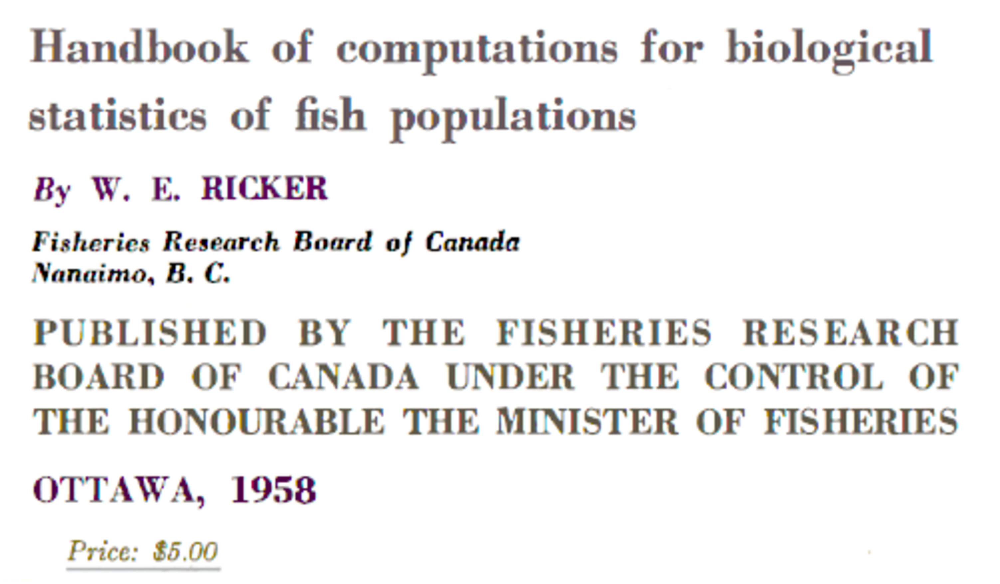
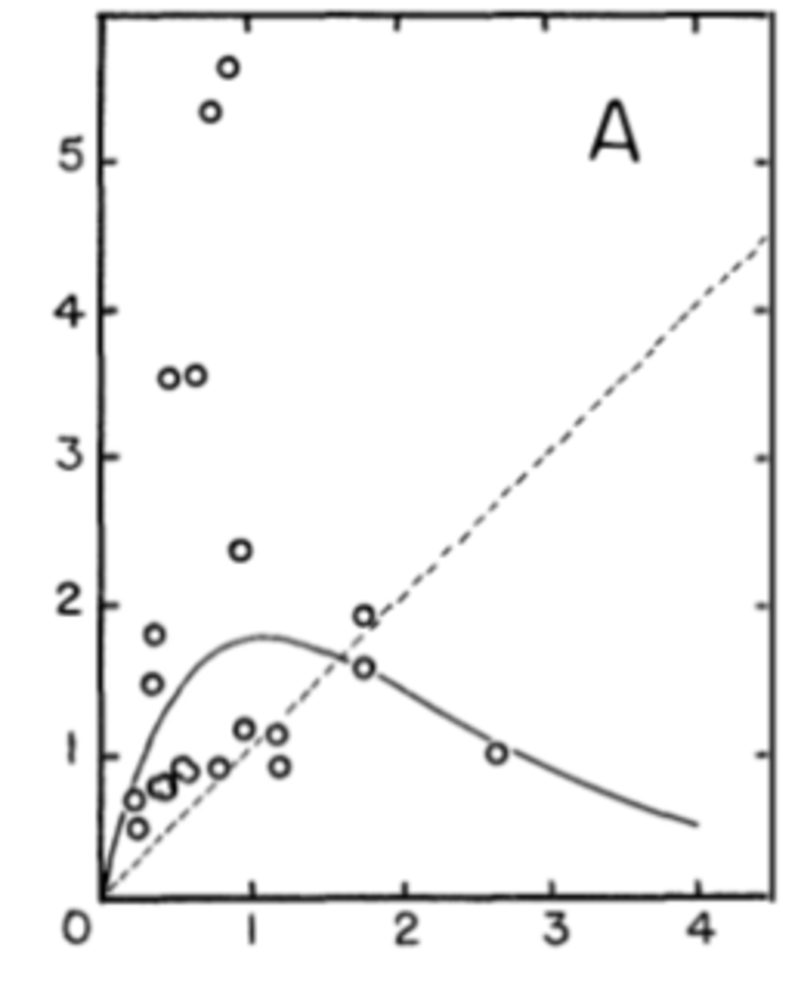
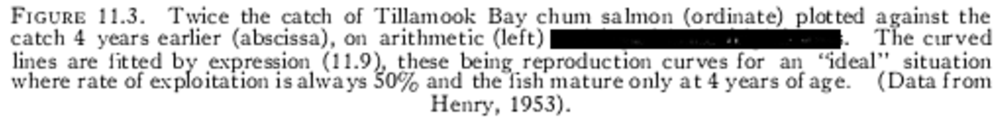
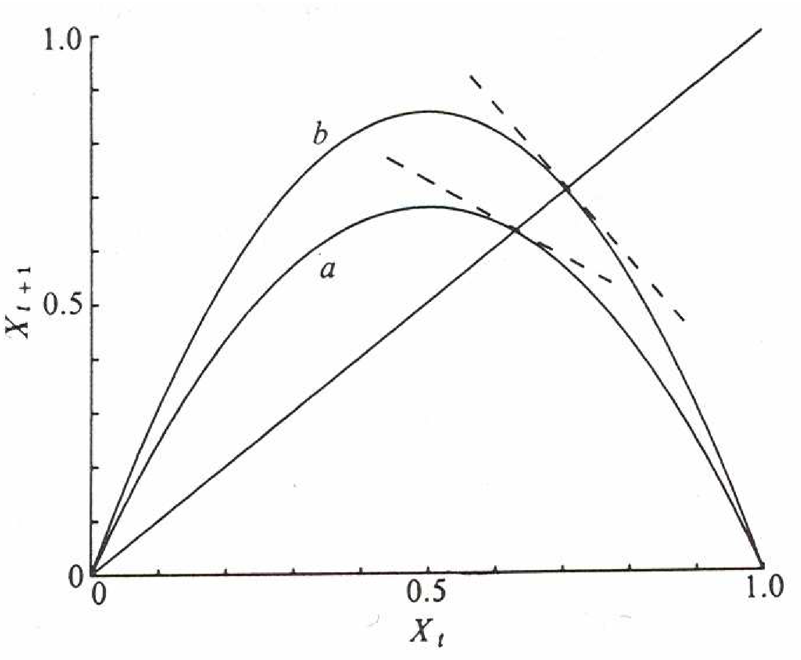
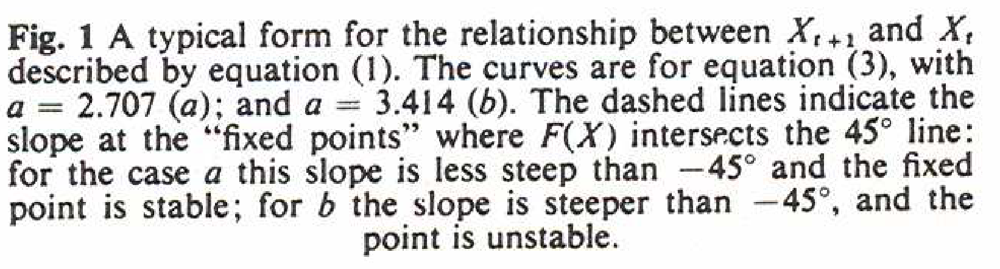
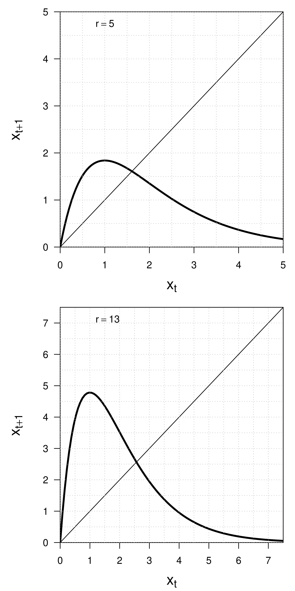

Section 4.1 Applications: nonlinear discrete-time dynamical systems (DTDS)
The Plan.
By studying a few real-world mathematical models, we will see a new dimension of mathematical work - more graphical and artistic, but rooted in calculus nonetheless.
Historical examples.
We will discuss two famous DTDS from the scientific literature: the Ricker model and the discrete-logistic model.



This model was used to study changes in fish populations over a 4 year period (chosen based on the reproductive cycle of the fish). The updating function (the curve) was chosen based on fisheries data and modeling.



This model was used to study changes in empirical and theoretical populations. Two examples of the updating function (the curves) are illustrated.
Dynamics and stability.
We see a hint of a ‘stability condition’ in the right-hand panel. Recall that equilibria occur where the diagonal and updating functions cross. The equilibrium point is stable if the updating function is ‘not too steep’ at this point, and unstable if the updating function is ‘too steep’ at this point.What might we mean by ‘too steep’? How can we describe the ‘steepness’ of a graph at a point?
Sample solutions.
Using the computer code as a guide, sketch some sample cobwebs.


Conclusions.
From your computer experiments and analysis above what conclusions can you draw about this model and its solutions?
Sample solutions.
Using the computer code as a guide, sketch some sample cobwebs.


Conclusions.
From your computer experiments and analysis above what conclusions can you draw about this model and its solutions?
For the DTDS \(x_{t+1} = f(x_t)\text{,}\) the equilibrium \(x_{t+1} = x_t = x^*\) is
- stable if \(-1 < f'(x^*)<1\) (or \(f\) has a small slope at \(x^*\text{,}\) \(|f'(x^*)|<1\)) and
- unstable if \(f'(x^*)<-1\) or \(1 < f'(x^*)\) (or \(f\) has a large slope at \(x^*\text{,}\) \(|f'(x^*)|>1\))
The solution \(x_t\) oscillates of \(f'(x^*)<0\text{.}\)
Big idea!
Near an equilibrium \(f\) looks like its tangent line, whose slope is given by the derivative there, \(f'(x^*)\text{.}\) Zooming in near the equilibrium point, the nonlinear model will look like one of the four cases pictured at the conclusion of the previous section with one of the basic behaviors.
Ricker Model.
Originally published in the 1950’s, the Ricker model was used to describe change in size of fish populations from one measurement to the next. Though there are other variants presented in literature, the model is
\begin{equation*}
N_{t+1} = rN_te^{-KNt},
\end{equation*}
where the values \(r\) and \(K\) are parameters. This model has been used to
- estimate growth and population parameters from data
- predict population growth
- optimize yields from harvested populations
Analysis of the Ricker DTDS.
To get some basic information we will analyze the Ricker model by hand before moving onto computing.
- With \(r=2\) and \(K=2\text{,}\) find the equilibria \(N^*\) for the Ricker model.
- What is \(f'(N)\) if \(f(N) = rNe^{-KN}\text{?}\)
- What is \(f'(N^*)\text{?}\) Are equilibria stable? Should solutions oscillate?
- Repeat the analysis if \(r=8\text{.}\)
Discrete logistic.
The famous model May discusses in the paper cited above is the discrete logistic equation or the ‘logistic map,’ given by
\begin{equation*}
x_{t+1} = rx_t(1-x_t/K),
\end{equation*}
where \(r\) and \(K\) are parameters and we think of \(x_t\) as describing the size of a biological population. The algebra of the analysis simplifies if we choose \(K=1\text{.}\)
- With \(r=2\) and \(K=1\text{,}\) find the equilibria \(x^*\) for the discrete logistic model.
- What is \(f'(x)\) if \(f(x) = rx(1-x/K)\) if again \(K=1\text{?}\)
- What is \(f'(x^*)\text{?}\) Are equilibria stable? Should solutions oscillate?
- Repeat the analysis if \(r=4\text{.}\)
Note on modeling.
Both of these models, and many others, are of the form
\begin{equation*}
N_{t+1} = N_tf(N_t),
\end{equation*}
where \(f(N)\) is the ‘per capita production’ as a function of the current population size. This model tells us that the new population size is a multiple of the old population size, and \(f(N)\) tells us what the multiple is. What is \(f\) for each of the models above?